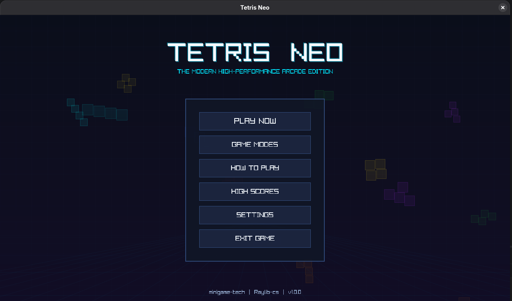
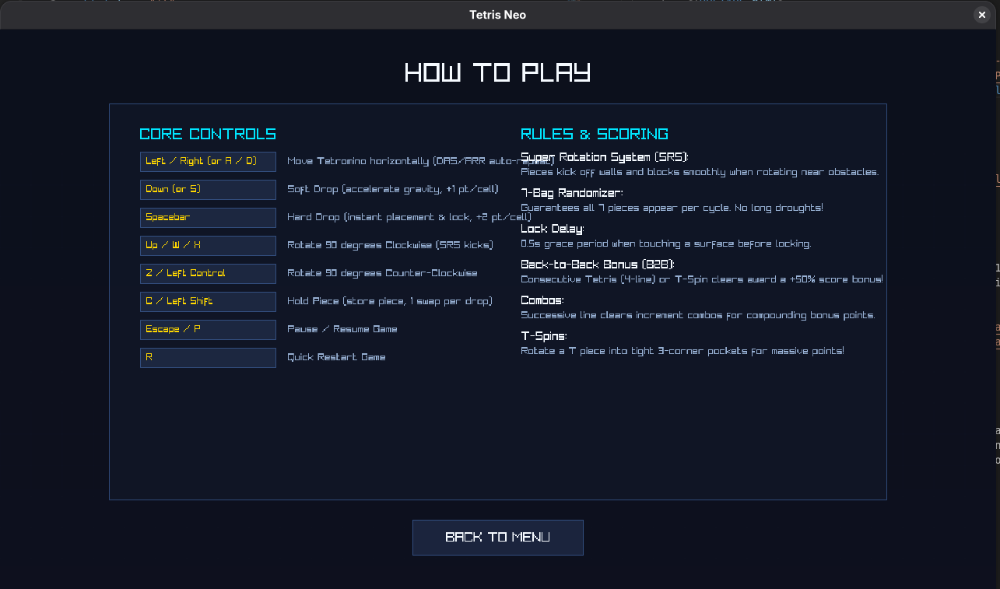
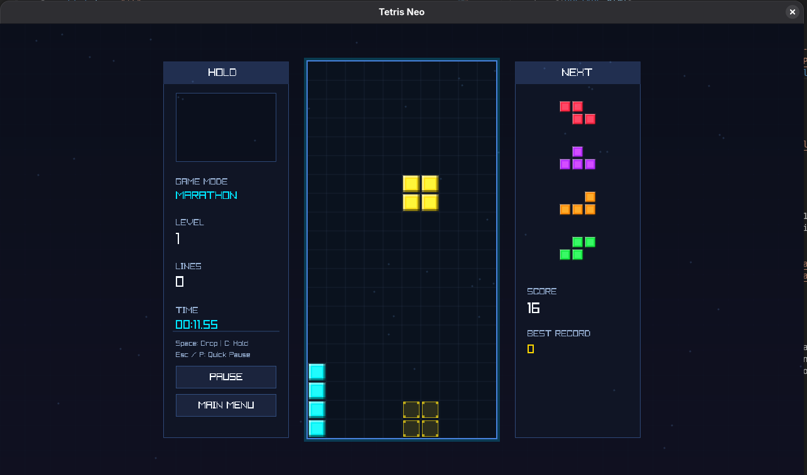

Questa è la mia versione del classico Tetris, dove devi incastrare vari blocchi tra di loro per portare a casa il maggior numero di punti.
Metti alla prova le tue abilità di concentrazione per poter raggiungere punteggi elevati.
Creato nel 1984 dall'ingegnere informatico sovietico Alexey Pajitnov, Tetris è uno dei videogiochi più iconici e diffusi di sempre. L'idea nacque dall'amore di Pajitnov per i puzzle con i pentamini, tessere formate da cinque quadrati, che lui semplificò usando quattro quadrati per creare i celebri tetramini. Il nome unisce il prefisso greco tetra (quattro) e tennis, lo sport preferito del suo creatore.
Sviluppare il gioco fu un'impresa fuori dagli schemi: Pajitnov lavorava all'Accademia delle Scienze di Mosca e programmò la prima versione su un computer Elektronika 60, che non aveva nemmeno uno schermo grafico. I blocchi erano quindi rappresentati con semplici caratteri di testo. Il gioco si diffuse da solo, copiato di computer in computer, prima in tutta l'Unione Sovietica e poi oltre la Cortina di Ferro.
Il successo mondiale arrivò con il Game Boy nel 1989, quando Tetris fu venduto insieme alla console di Nintendo, trasformandosi in un fenomeno globale. Dietro le quinte, però, la questione dei diritti fu una vera battaglia legale e diplomatica che coinvolse aziende occidentali e l'ente sovietico che gestiva l'export del software. Solo anni dopo Pajitnov riuscì a ottenere i diritti sulla sua creazione. Tetris ha di fatto ridefinito il concetto di puzzle game, diventando uno dei giochi più venduti e portati su ogni piattaforma immaginabile.
| Frecciette direzionali | Rotazione e caduta maggiore del blocco |
| Barra spaziatrice | Caduta immediata del blocco |
| P | Messa in pausa del gioco |